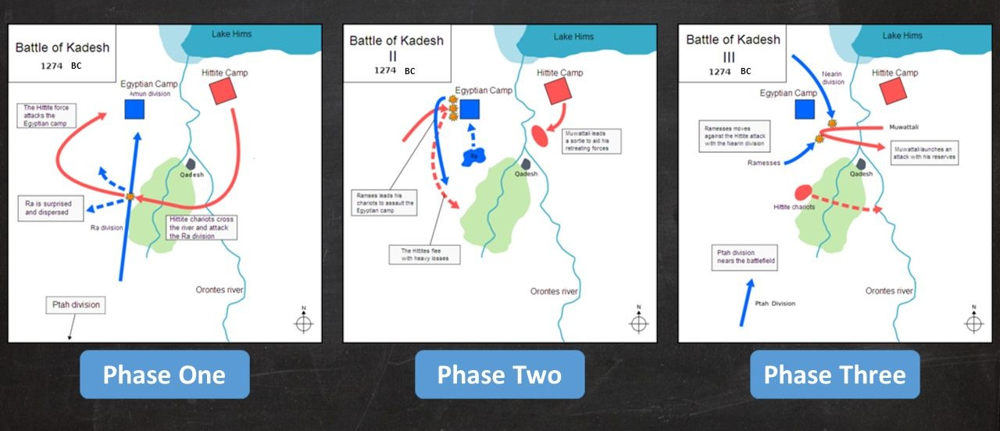

City of Kadesh, which was under Egyptian administration for over a century, fell to the Hittites. The city was located in strategic point between two empires, and was too far from Memphis and Hattusa to control it effectively. This meant that whoever ruled this city at the outskirts had more power. Ramesses II wasn't content with Hittite control of Kadesh, and just 3 years of rule passed when he started planning his conquest. In -1274 spies notified the pharaoh that Hittite king Muwatalli's army was deep into Hittite territory, which meant it was time to attack. Ramesses II raised the largest army Egypt has ever seen (20 000, divided into 4 divisions according to Egyptian sources). Egyptian army marched for two months until it came close to Kadesh. Hittite prisoners from Levant informed pharaoh that Hittite army was still far away from Kadesh, so he didn't waste any time and proceeded to the city itself. This information of Hittite positions was a farce, and Mursilli waited in the other side of Kadesh with an army of 48 000 men (mercenaries included). Hittite army was armed with 3 000 chariots, which included an archer and a shild bearer.
When Egyptian army rested in front of the city, Hittite army attacked and cut off pharaoh's division from rest of his army, and would destroy it if not for the terrain which made Hittite chariots immobile. Ramesses II was forced to call the reinforcments, which were stationed by the sea. Reinforcements came from 2 sides simultaneously which confused Hittite army full of unruly mercenaries. Egyptian army was on professional level compared to their enemies. As the night came down, Hittites retreated and regrouped.
At dawn, armies clashed again but were evenly matched now, and Muwatalli suggested peace to pharaoh. Remesses II denied the peace terms but pulled his army from Kadesh and marched back to Egyptian homeland, with prisoners of war and tales of valor. Battle was left with no real victor, Hittite army was outmatched by smaller Egyptian army but Kadesh still lay in Hittite hands.
This battle became a symbol of Egyptian dominion, even if it was a battle with no real victor (since Kadesh was left in the Hittite hands). Egypt was an empire which dominion was based on reputation, and if Egyptian army was as strong as Ramesses II tells in his reliefs, it would've taken Kadesh. This is not a first time in Egyptian history that stalemate gets called a victory. Ramesses II built more temples and monuments than any ruler before him, which cemented his importance, regardless of the fact that he couldn't take back Kadesh.
Even worse for Ramesses II, Assyria was on the rise. Egypt started losing hold on Canaan, with many rebellions starting to lit up. Pharaoh read the situation and made peace with Hittite king Hattusili III, called Treaty of Kadesh. This treaty is one of the oldest completely surviving treaties in history, it fixed their mutual boundaries in southern Canaan, and was signed in -1258. Ramesses II didn't fully respect the treaty, as he didn't send a princess to Hittites for royal marriage. He loved women and had more than 100 kids, so it's no surprise no Egyptian princesses were not sent abroad.
In Luxor, there is relief explaining the treaty, where Hittites are portrayed as begging the Egyptians for peace. At the same time, in Hittite capital Hattusa lays a relief of treaty with Egyptians begging the Hittites.
(modified excerpt from The History of the Ancient World by Susan Wise Bauer)
Main article image by Amplitude Studios